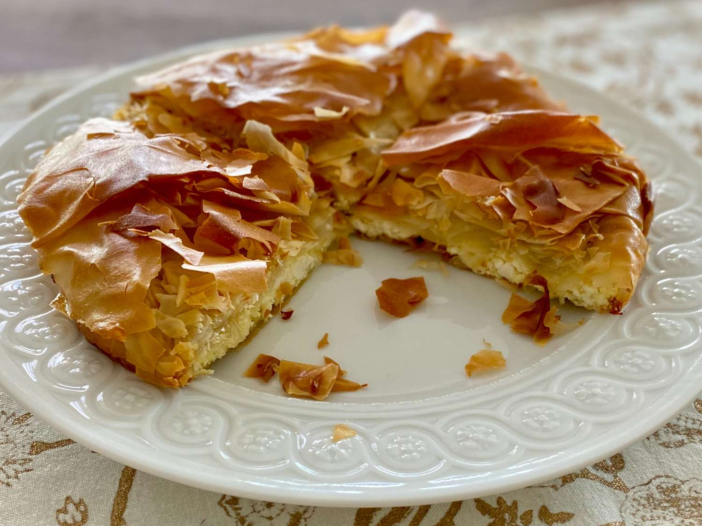

Trahana Pie Recipe

Description
A hassle-free and speedy recipe for a comforting pie with phyllo and a rich filling with trahana pasta and
cheese! You will only need 1 pan and 15 minutes to prepare it!
Ingredient list
- 125 g trahana pasta
- 4 phyllo dough sheets
- 500 g water
- 6-8 tablespoon(s) olive oil
- 125 g gruyere cheese, grated
- 0.5 tablespoon(s) oregano, dried
How to make trahana pie step by step
- Put the trahana pasta and the water into a heatproof bowl, and then cover the bowl with plastic wrap.
- Put the bowl in the microwave and cook the trahana pasta for 5 minutes at 800 Watts.
- Remove the bowl from the microwave and let it cool for 10 minutes.
- Take out the plastic wrap and stir the trahana with a spoon.
- Add the gruyere cheese and oregano, and mix them well.
- Add 1-2 tablespoons of olive oil to a 28 cm frying pan.
- Place the first phyllo sheet over half of the pan's surface, so that it is overhanging from the pan, and
drizzle it with 1 tablespoon of olive oil.
- Place 1 more phyllo sheet at the other half of the pan's surface, and drizzle it with another tablespoon of
olive oil.
- Follow the same process for the other 2 phyllo sheets.
- Add the filling and spread it with a spoon.
- Fold the overhanging phyllo sheets inwards and drizzle them with the rest of the olive oil.
- Place the frying pan over medium-low heat, and cook the pie for 4-5 minutes.
- Turn the pie over, using a plate, and cook it for another 4-5 minutes until it is nicely golden and cooked
through.
- Remove the pan from the heat and place the pie on a cutting board.
- Cut the trahana pie into 6 pieces and serve.